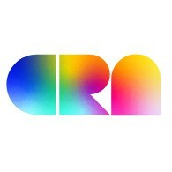

全球首个面向华人LGBT的助学金正式接受申请！
以下文章来源于CRN ，作者CRN

CRN
.
华人彩虹联盟 海外最大的华人LGBTQ+组织Chinese Rainbow Network
朋友你好！我是CRN彩虹助学基金项目的负责人孙佰利，本科就读于吉林大学，毕业后来到美国罗彻斯特理工大学攻读硕士学位，自此成为了千千万万在美国求学的中国留学生中的一名。
回首我的留学之路，可以说是充满了种种困难和挫折。出身于普通工薪家庭的我，留学海外曾经就像是一个瑰丽却又遥不可及的梦，想要努力争取却又受困于经济基础的窘迫而无法实现；而另一方面，同志隐秘身份又给我的日常生活带来了种种现实压力，于是在内心更加盼望着可以通过求学海外来缓解这些压力，乃至争取改变自己的人生。这一切，都让留学海外这件事，变得既迫在眉睫又希望渺茫。于是在相当长的一段日子里，我内心无时无刻不处在煎熬之中。
好在在无数好心人的热情帮助下，一切有惊无险顺利渡过所有波折，最终我非常幸运地申请到了研究生奖学金，解决了学费和生活费问题。就这样，带着无比的感恩之心，我远赴重洋，投入了全新的环境。“穷人的孩子早当家”，国外的求学生活虽然清苦忙碌，我却感到格外的充实并乐在其中——毕竟，现在的我，终于可以坦然面对真实的自己，可以自由地对自己的人生作出忠于内心的选择。
尤其不可以忘怀的是，所有在我的求学道路上，伸手支援帮助过我的人们，他们让我深深地感受到，所有这些无私的援助——即便只谈它的精神力量，也是无比巨大的：因为它真真切切可以影响一个人的精神面貌，从而在极大程度上扭转他的命运。“赠人玫瑰，手有余香”，我深深地感到，即便力量微小，我也应该把这份正能量传递下去，尽我所能，回报社会。——我知道在国内仍然有很多的朋友，受到各种客观条件所限，对于如何出国留学感觉既迫切又迷茫。对于这种心情，身为过来人的我简直感同身受，而能够为这些朋友提供任何力所能及的帮助，也是目前我感觉最有意义的事情。
就这样，在很多怀有类似想法的同志朋友帮助下，北美华人同志联盟CRN（China Rainbow Network）正式启动了彩虹助学金计划，旨在帮助广大有志于留学海外，却面临经济困难的同志朋友们。具体内容包括向每位获奖人提供5000元人民币，作为申请海外大学的专项基金，并提供相配套的行业咨询，内部推荐等个人服务。CRN作为北美最大的一个致力于北美华人同志权益事业的同志群体，一直以来都以推动北美华人同志的权益事业为己任，这还是第一次尝试为广大尚在国内的同志朋友们提供服务。然而作为北美华人同志社区，尤其是留学生社区和国内的桥梁，助力国内有需要的LGBT朋友，CRN感觉义不容辞。
有人说在当今的中国，阶级的流动性已经渐渐放缓，“寒门难再出贵子”——像你我这样普通人家出来的孩子，作留学梦也是越来越不切实际。这也许是一个事实，但是我仍然愿意尽我所能，帮助一个，再帮助一个，让那些曾经和我一样困窘、迷茫、无助的同志朋友们，也能够感受到我所沐浴过的，来自同伴的温暖，以及无私援助。毕竟——“这条小鱼在乎”。
愿我们能以至诚和热情，为你在大洋彼岸的远大前程，襄助一臂之力！
CRN 彩虹助学金申请办法
CRN 彩虹助学金（CRN Rainbow Scholarship）由北美华人同志组织China Rainbow Network (CRN)设立的，旨在帮助优秀华人LGBT学生来北美深造。
1. 申请条件
认同自己的LGBT身份，热衷社会公益的准备2016年赴北美留学的优秀华人学生。
2. 助学金标准
通过初选的候选人能够获得CRN提供的多种形式的申请咨询，例如利用CRN社区内进行联系，寻求同行建议，就业咨询等。
获得终选的候选人会获得5000人民币助学金
3. 申请准备
为方便大家申请，申请材料从简，只需以申请北美学校的package为基础提交一下材料：
a. 简历
b. 成绩单
c. 在读证明／毕业证
d. 申请任一北美院校的PS，无需任何更改
e. Addtional Essay，覆盖以下内容：你为何申请CRN Rainbow助学金？你是否曾从事过同志相关志愿者活动，以及对未来参加同志权益活动的打算。
将以上电子版发送至
RainbowScholarship@ChinaRainbowNet.Org
4. 审核标准
a. 关注并积极参与社会工作，同志公益。
b. 课业优秀。
5. 截止日期：2016/05/01 23:59:59 EAST TIME
初审为Rolling审核，先到先审。上交后一个月内得到回复。
若有问题，请发邮件至RainbowScholarship@ChinaRainbowNet.Org
关于CRN
China Rainbow Network （CRN）始创于1996年，全部由北美华人同性恋者、双性恋者以及跨性别人群（LGBT）组成。目前，CRN拥有会员1000余人，是北美最大的华人同志互助团体。
所以自成立后，CRN一直致力于为北美地区的广大华人同志提供社交与资讯服务, 宣传和倡导健康生活、真诚交友的理念，促进同志文化在华人社区的传播与发展，扩大北美华人同志的影响力，并争取同志权益，共同推动同志运动进程。
2015年是CRN又一次开创历史的一年。CRN正式在美国注册为NPO（非赢利组织）, 并作为历史上第一支华人团体出现在纽约的同志大游行中，由此还登上了美国各大华人媒体以及华尔街日报等主流媒体。CRN创造的力量正在影响和感动越来越多的人。
我们感谢所有为CRN捐款的朋友们——正是你们的慷慨解囊和无私帮助，才使得这一切都有了可能，让我们有底气可以去帮助更多的人！无论多少我们对每一笔捐款都心存感激，并衷心地感谢您为了华人同志的公益事业所作出的贡献。与此同时除了资金上的支援以外，我们同样也需要热心人加入委员会，帮助甄选助学对象。尤其今年有不少捐款数额较大的大“金主”，为了能让大家能更清楚地了解自己的资助流向，我们将邀请所有捐款数额过百的捐款人一起加入组委会，共同参加评选。
CRN历来坚持账务公开，所有费用和捐款明细都在此，若有疏漏，请与我们联系
以下为部分捐款人名单，加星号为已获邀请加入组委会者。
来吧朋友，伸出你的双手，让世界因为有你而变得更加美好！请记住，你的每一笔善款，都有可能改变一位优秀学子的终身命运！
我们的捐款Paypal账号是
donation@chinarainbownet.org
CRN期待着每一位朋友的加入，让我们一起把爱心传下去！
官方网站：http://www.chinarainbownet.org/
官方微信账号：CRN